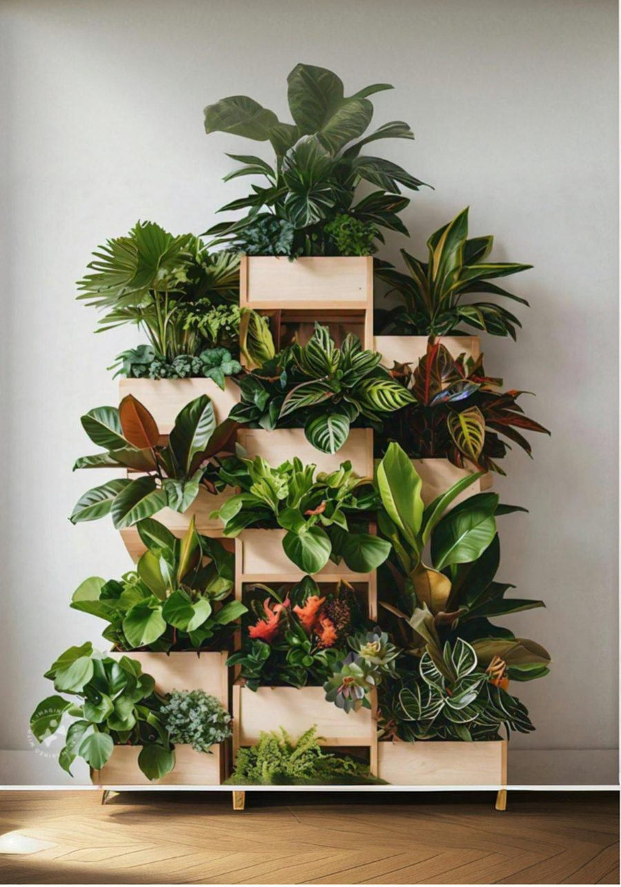

Make setup accessible
Reduce friction around choosing affordable, small-space-appropriate equipment and services.
A personal end-to-end UX product design and research project exploring how urban farming can become more accessible, practical and sustainable through a connected service ecosystem.
View Figma ResearchUrban agriculture sits at the intersection of space constraints, equipment, maintenance, skills, water, soil and ongoing support.
The study frames three recurring business problems: access to affordable equipment, the cost and complexity of sustainable practices, and gaps in technical knowledge and training. That makes the experience fundamentally different from a simple marketplace or content product.
Reduce friction around choosing affordable, small-space-appropriate equipment and services.
Connect water, waste, soil and maintenance choices to services people can actually execute.
Turn expert advice and training into timely help inside real farming journeys.
The research moved from secondary research into exploratory surveys, user interviews, causal validation, user-group formation and feature benchmarking. The important design move was not any one method — it was using each layer to narrow uncertainty before committing to a product direction.
A deliberate focus throughout was research bias: leading language, framing, stereotyping, social desirability, ambiguity and interpretation were treated as things to actively control for, not ignore. Attitude and behaviour statements were validated with users before being turned into stronger product assumptions.
Space, location, crop, season and confidence level change what "good advice" means.
Equipment, irrigation and advanced technology can become adoption barriers.
People need accessible ways to understand soil, crop health and pest issues.
Sustainability is experienced as an operational problem, not only a value.
Local, credible advice can reduce uncertainty at the exact moment of action.
Sharing experiences can complement formal guidance and build confidence.
The research followed a four-step process: collate all responses, filter around the business case, identify similarities and patterns, then form groups. The resulting groups represent different combinations of education, household context, motivation and gardening maturity — not one abstract "urban farmer" persona.
Interested in sustainable agriculture and building competence before going deeper.
Exploring gardening jointly and looking for practical, manageable routines.
Connects urban gardening with household health and food outcomes.
Already motivated and looking for deeper support, quality and sustainability.
Benchmarking uncovered a wide feature universe: crop diagnosis, soil testing, personalized nutrient advice, product pages, service booking, recommendations, progress tracking, WhatsApp-style support, maintenance, emergency repair, yield prediction and more.
The strategic insight is that these features become useful only when anchored to a specific stage of the user's journey. Instead of "build an urban farming platform," the brief becomes more precise: help users choose, start, maintain and improve a farming setup that fits their space, capability and goals.
The service model starts at inquiry and continues through assessment, planning, procurement, installation, monitoring, maintenance, education and renewal — a continuous cycle rather than a one-time purchase.
This modularity matters because not every user needs the same entry point. A novice may begin with a consultation; a more experienced grower may begin with soil testing, irrigation, hydroponics or an expansion request.
A rooftop service touches inquiry, consultation, site assessment, feasibility, layout, quotation, procurement, installation, inspection, payment, maintenance, harvest tracking, issue reporting and renewal. A good product experience makes these handoffs visible rather than making the customer coordinate them alone.

The benchmark study compares existing players and surfaces a feature universe spanning product discovery, service centers, expert advice, diagnosis, soil testing, personalized recommendations, dashboards, tracking, reviews and support.
Find products/services and narrow options with contextual recommendations.
See plans, service guarantees, reviews, authenticity and provider information.
Follow installation, maintenance, crop health and issue resolution.
Use crop planning, disease diagnosis, nutrient advice and yield-oriented insights.
The opportunity is not to win by having the most features. It is to reduce the handoffs between them.
That principle leads to a product architecture built around a persistent journey state: what the user is growing, where it is, what has happened, what needs attention next, and which support is available.
The strongest portfolio-level outcome is the reframing itself: from "urban farming products" toward a service ecosystem that can meet users at different levels of readiness — from first consultation to long-term maintenance and learning.
Features are organized around user progress instead of isolated modules.
Space, crop, season, location and user confidence become inputs to recommendations.
The model can support installation, maintenance, learning and future smart-farming layers.
Recommendations can adapt to space, budget, crop and experience.
Bring installation, maintenance, subscriptions and crop signals into one state model.
IoT and automation become optional extensions, not prerequisites for getting started.